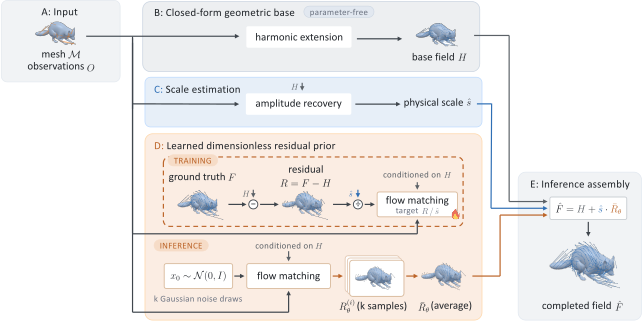

Closed-Form Harmonic Base
motion: lowhigh
A parameter-free graph solve with fixed observed vertices serves as the base motion and control.
Predict full surface motion from sparse observations without skeletons, templates, registration, or cross-mesh correspondence across distinct geometry families.
Abstract
Sparse-to-dense motion completion recovers dense mesh motion from sparse vertex displacements. Residual priors trained on one geometry family frequently fail to beat parameter-free harmonic extension off-family. Moreover, cross-family training meets a scaling barrier: residual amplitude varies by more than an order of magnitude across geometry families and collapses as observations become denser. Since this scale depends on unknown target motion, it cannot be measured directly at test time. We decouple residual structure from physical scale by learning a dimensionless prior, estimating amplitude from observables and a lightweight correction fitted only on training sources. Our unified model surpasses harmonic extension across all evaluated families, including unseen cloth and legged bodies, without skeletons, registration, or cross-mesh correspondence. The same prior applies without retraining to point-tracked animal video and a robot grasping a soft body.
Robot
In Isaac Lab, Franka lifts a soft bar; from four base and four hand points, the frozen model completes the unobserved object's motion.
In Newton simulator, Franka carries a sagging bar; from four base and four hand points, the frozen model completes the unobserved object's motion.
Video
Ours observes 2% of the vertices of a video-to-4D reconstruction (Motion 3-to-4) and completes the rest; the middle panel is that reconstruction, shown for reference, not ground truth.
Robot · Fine-tuned


Not zero-shot: the checkpoint fine-tuned to a fixed three-marker placement on the gripper (Appendix G). On a held-out episode, each arm is coloured by its per-vertex error, on one shared scale.
Method

Amplitude recovery
The gap between true motion and harmonic extension shows stark amplitude differences across families.
Factoring out estimated amplitude brings residual scales much closer together across seen and held-out families.
Contributions
A parameter-free graph solve with fixed observed vertices serves as the base motion and control.
Dividing the raw residual by estimated amplitude yields a dimensionless target, bringing cross-family scales closer together.
Recomposing the harmonic base with scaled flow predictions produces full motion with lower ground-truth error.
Explore in 3D
Drag to rotate · ⌘/Ctrl + scroll to zoom
BibTeX
@article{su2026cepheid,
title = {Cepheid: Decoupling Scale from Structure for Cross-Family Motion Completion},
author = {Su, Chih-Hai and Ke, Tsung-Wei and Liu, Yu-Lun},
journal = {arXiv preprint arXiv:2610.18871},
year = {2026},
eprint = {2610.18871},
archivePrefix = {arXiv},
primaryClass = {cs.CV}
}